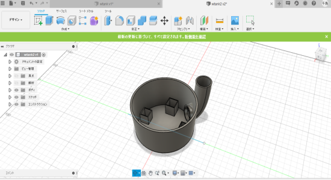
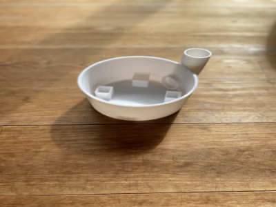
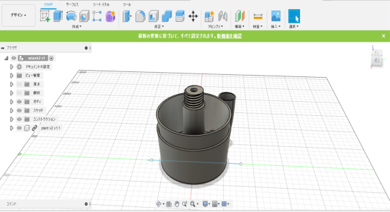

今回はデザイン案のプランター部分の試作品を考えた。デザイン案は外見だけを考えればよかったが、内部の機能的な部分の構造を考えなえればいけないので、かなり時間を浪費した。渡邉君と相談しながら取り組み、一つの試作品を作ってみた。
 渡邉君がプランター部分と上下を繋ぐジョイント、僕はプタンターの下に設置する水タンクの部分を試作した。水を入れる部分はこのサイトを参考にした。渡邉君とプランターと組み合わせると下のようになる。
絵が下手だが大まかな機能を説明する。車線部分が水があるところを表している。プランターと水タンクを組み合わせると下に空洞ができる。そこにポンプを設置し、水を下から上へくみ上げる。するとジョイントの穴の部分から水が出るという仕組みになっている。水はタンクの穴の部分から補給が可能なので、プランターを取り外す必要はない。実際に水が出ている動画は渡辺君のページから見れる。
ここまで機能的な内部構造を考えてきたが、配線を通す場所が確保できていない。できるだけ配線は外に出したくないので中に通したいが、水があることで難しくなっている。今のところいい案が出ていない。